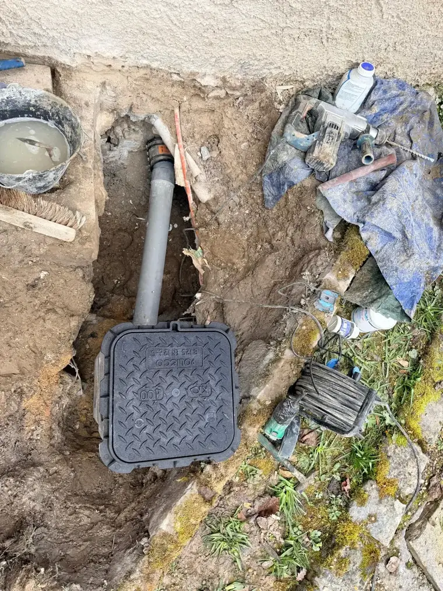
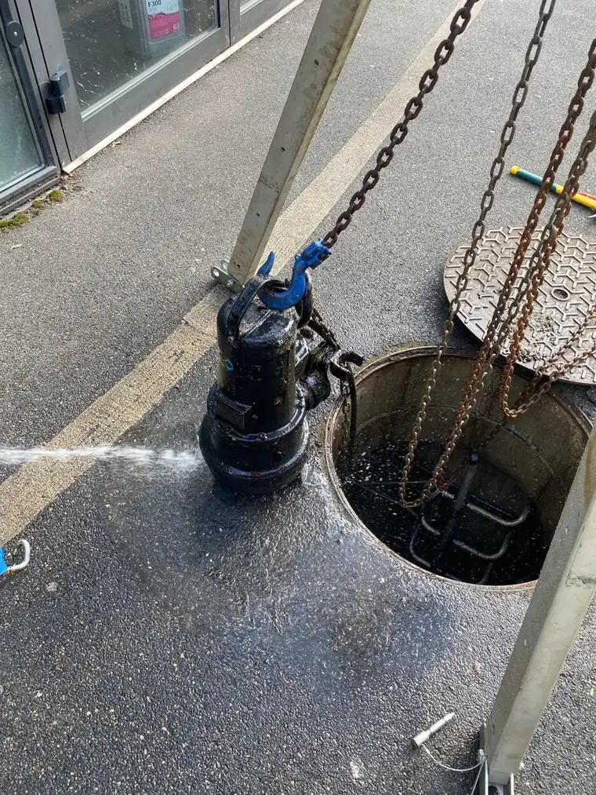
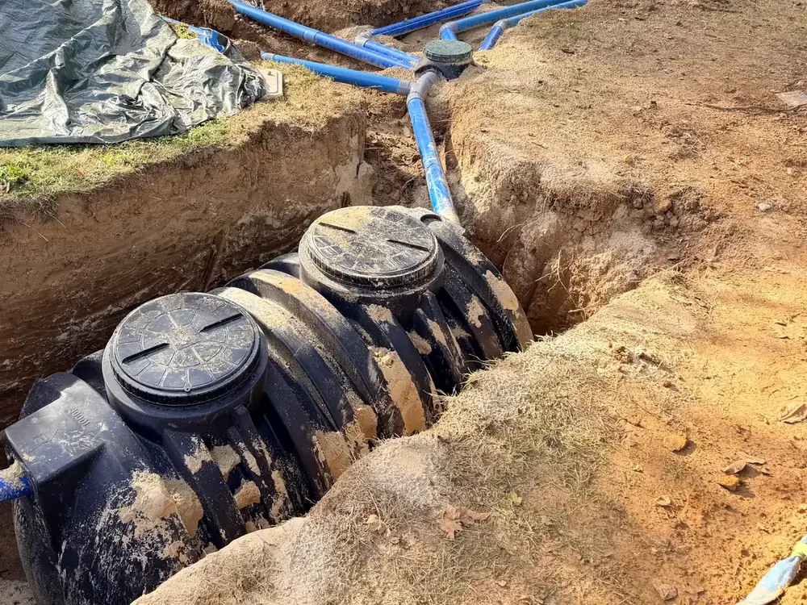
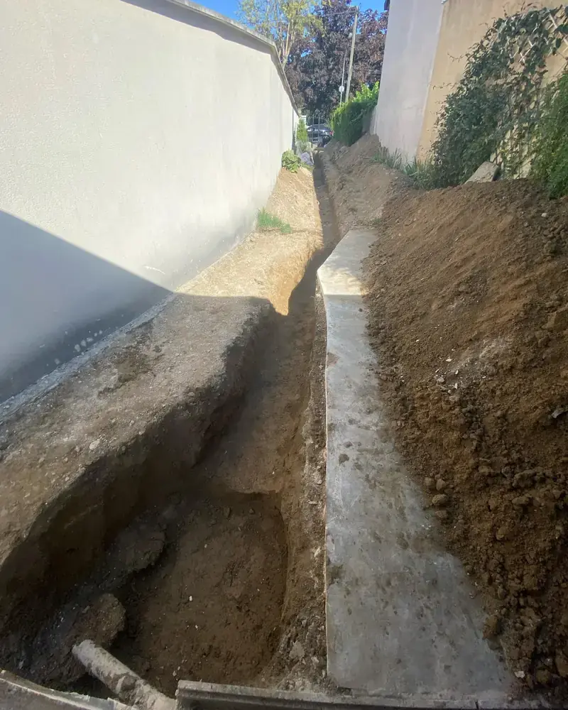
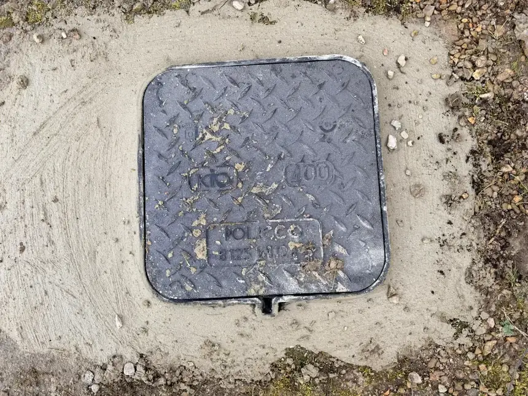
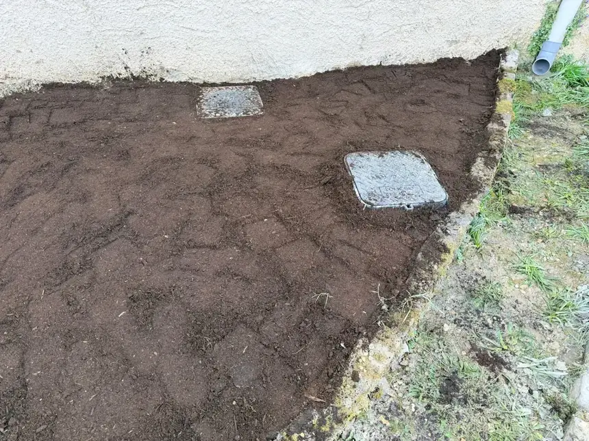
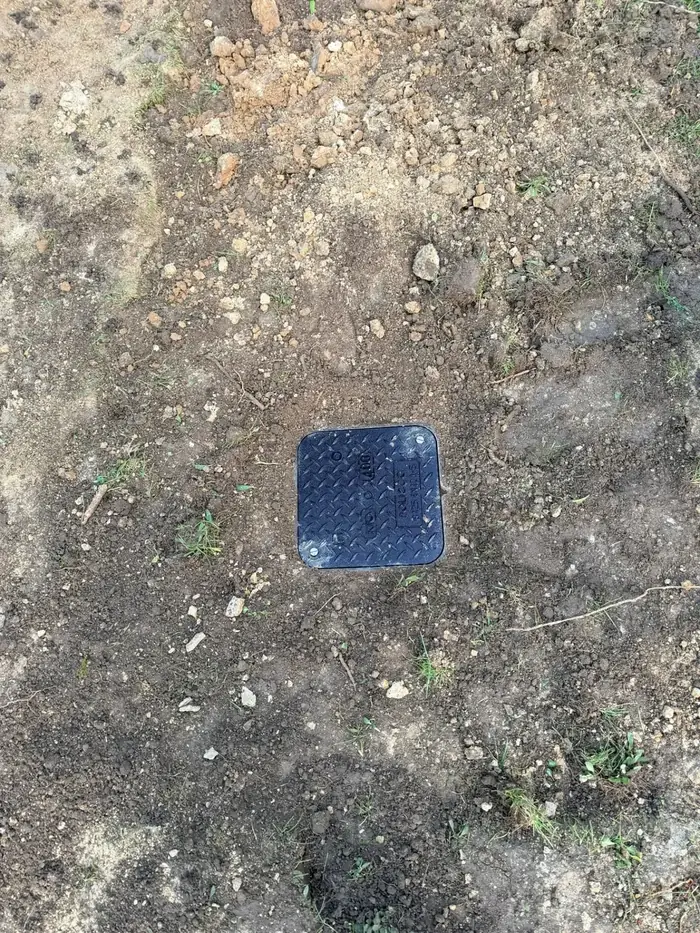

Votre assainissement est non conforme ? Nous réalisons les travaux.
01 89 48 09 64du lundi au samedi, de 8 h à 19 h
 Grille
GrilleMise en conformité, raccordement, regards et canalisations : chez vous, sur la partie privée du réseau, en Île-de-France. Visite, puis devis écrit et gratuit ; les travaux commencent après votre accord.
« Pouvez-vous faire les travaux indiqués sur mon rapport ? »
Envoyez-le. Nous regardons les anomalies relevées et nous vous disons ce que nous pouvons réaliser, sur la partie privée de votre installation.
Le contrôle et l'avis de conformité relèvent du service d'assainissement de votre commune ou du SPANC. Nous réalisons les travaux.
- Vous nous transmettez le rapport, en photo ou en PDF.
- Nous examinons les anomalies relevées.
- Une visite sur place peut être nécessaire.
- Nous établissons un devis écrit, selon les travaux identifiés.
- Vous décidez. Rien ne commence sans votre accord.
Ce que nous réalisons, chez vous.
De la maison jusqu'à la limite de propriété. Le réseau sous la rue relève de la collectivité.

TamponCanalisation raccordéeAprès un contrôle, avant une vente
- Mise en conformitéNous corrigeons ce que le contrôle a relevé.→
- Raccordement au tout-à-l'égoutDe la maison jusqu'à la boîte de branchement.→
- Regards et canalisationsCréation, remplacement, séparation des eaux usées et pluviales.→
- Eaux de pluie à la parcellePuisard, tranchée d'infiltration, drainage.→

Pompe de relevage
Fosse toutes eauxSans tout-à-l'égout, et autres travaux
Le même lieu, quatre moments.
Une allée en Île-de-France. Une canalisation posée sur toute sa longueur, raccordée, puis l'allée refaite. Les photos sont celles du chantier.
 1 · Avant
1 · Avant
2 · OuvertureTranchée 3 · RaccordementBoîte de raccordementCanalisation4 · AprèsGrille
3 · RaccordementBoîte de raccordementCanalisation4 · AprèsGrilleL'allée en terre, avant les travaux.
Mise en conformité, Villecerf (77)
Un regard avec cunette, un tampon scellé, le terrain remis en état.



Puisard, Limeil-Brévannes (94)
Pour les eaux de pluie : la fouille, la pose, puis le remblai.



Comprendre votre installation.
Deux situations, selon que votre rue est desservie ou non par le tout-à-l'égout.
Maison raccordée au réseau public
- Regard de visite, sous son tampon
- Canalisation d'eaux usées, en pente vers la rue
- Boîte de branchement, lorsqu'elle existe
- Eaux de pluie, gérées à part
- Limite de propriété
- Réseau public, sous la rue
Maison non raccordée, avec sa propre installation
- Fosse toutes eaux : elle reçoit toutes les eaux usées de la maison
- Tampons d'accès, pour l'entretien
- Traitement dans le terrain, ou micro-station
Schémas de principe. L'emplacement des ouvrages et de la limite dépend de votre terrain et du règlement de votre commune. L'assainissement non collectif est contrôlé par le SPANC.
- Regard
- Un accès au réseau, fermé par un tampon. Il sert à contrôler, à curer et à passer la caméra.
- Eaux usées
- Les eaux des WC, de la cuisine, de la salle de bain et du lave-linge.
- Eaux pluviales
- Les eaux de pluie des toitures et des sols. Elles ne doivent pas rejoindre le tuyau des eaux usées.
- Partie privée
- Ce qui se trouve chez vous, de la maison jusqu'à la limite de propriété. C'est là que nous intervenons.
- Boîte de branchement
- Lorsqu'elle existe, elle relie votre canalisation au réseau public, en limite de propriété.
Comment se déroulent les travaux.
- Nous examinons votre demandeAvec votre rapport ou quelques photos, si vous en avez.
- Nous venons voir, si nécessaireUne visite sur rendez-vous : le terrain, les regards, les canalisations.
- Nous détaillons les travaux et leur coûtUn devis écrit, poste par poste, gratuit et sans engagement.
- Nous intervenons après votre accordLe planning est indiqué avec le devis, selon le chantier.
Aucun prix n'est donné sans visite. Le devis tient compte de l'accès, du linéaire, du sol et des travaux nécessaires. Badr-Eddine Belaïd, fondateur de BAB Assainissement, entreprise créée à Saint-Mandé en 2024.
Toute l'Île-de-France, depuis Saint-Mandé.
Qu'est-ce que la mise en conformité d'assainissement ?
C'est corriger ce qu'un contrôle a relevé sur votre installation : branchement au réseau public, séparation des eaux usées et des eaux pluviales, fosse ou micro-station pour une maison non raccordée. Le contrôle est fait par le service d'assainissement de votre commune ; nous réalisons les travaux sur la partie privée.
Comment est calculé le prix d'un raccordement ?
Le prix dépend de la distance entre la maison et la boîte de branchement, de la profondeur, du terrain et des regards à créer. Nous l'établissons par un devis détaillé, poste par poste, après avoir vu les lieux.
Sous quel délai pouvez-vous intervenir ?
Nous rappelons du lundi au samedi, de 8 h à 19 h, puis nous fixons une visite sur rendez-vous. Le planning des travaux est indiqué avec le devis, selon le chantier.
Prenez-vous en charge les démarches administratives ?
Nous vous aidons à réunir ce que demande le service d'assainissement de votre commune (rapport de contrôle, plan, photos, description des travaux) et nous vous remettons les éléments utiles après les travaux. Les travaux sous la voie publique relèvent de la collectivité.
Quelle différence entre fosse septique et fosse toutes eaux ?
La fosse septique ne reçoit que les eaux des WC ; la fosse toutes eaux reçoit l'ensemble des eaux usées de la maison. Une ancienne fosse septique est souvent relevée lors du contrôle avant une vente.
Comment se déroule une inspection caméra ?
Une caméra est passée dans la canalisation depuis un regard ou une ouverture ; elle montre l'intérieur en direct : fissures, racines, dépôts, contre-pentes, raccords décalés. Nous vous remettons ensuite un rapport avec les images.
Nous contacter
Le plus simple : appelez.
01 89 48 09 64Du lundi au samedi, de 8 h à 19 h.
14 avenue du Général de Gaulle, 94160 Saint-Mandé.